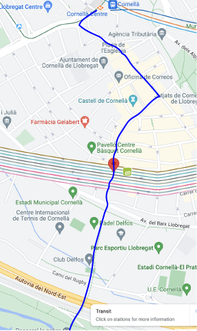
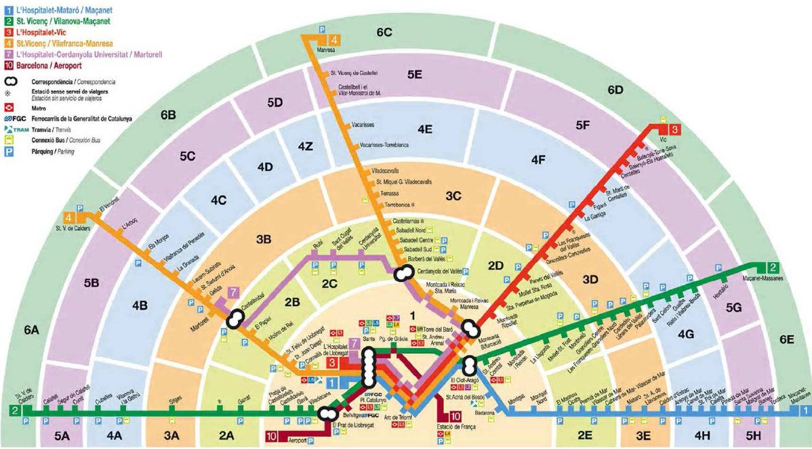

Hikes:¶
Mostly thinking of this as tagging hikes that are reasonably accessible from Barca via metro plus short bus ride at most. One of the things I will need to do early on is check what is meant by easy-moderate-difficult in this context. I hope to also include some information on getting to trailheads.
Mount Tibidabo:¶
From Plaça Catalunya take the L7 (brown - linea marrón) which runs end to end from Plaça Catalunya to Ave. Tibidabo. Get on at the begining get off at the end. At that point we hopped a bus (bus 196 according to one guide). We picked up the bus on the uphill side (on Ave. Tibidabo) of the metro station across from what Jordi thought might be one of the more exclusive restaurants in Spain.
The bus drops you (where it turns around) at the base of the Funicular de Tibidabo - Cuca de Llum. We could take this teleferico up to the ring road (Carretera de les Aigues in Catalan) that runs around Tibidabo. We reached the ring road by walking up a narrower trail to the left of the restaurant which is a ‘street’ that devolves into a path. This street is Carrer de Guarda Anton which dead ended in a foot path that led us up to the ring road. Jordi said that the ring road runs for 10 km around the mountain and we saw many many runners and bikers on the roadway (dirt surface). It was clear that Brian N (a friend who will be visiting) would love the ride up Tibidabo but would be bored with the ring road. It was a lovely walk with constant views of the city and various landmarks. From this distance the communication tower on top is a remarkable piece of tech and we could see the Fabra Observatory as well as the inglesia (church which was very cathedral-esque) on top next to the amusement park. By chance Jordi’s father was also out for a walk and we got to meet him briefly. We also saw a couple of wild boar (los jabalies) which are becoming a major problem in and around cities across Europe. Cute but dangerous.
Parc Natural de Sant Llorenç del Munt i l’Obac:¶
https://www.alltrails.com/parks/spain/barcelona/parc-natural-de-sant-llorenc-del-munt-i-lobac
Parc Agrari:¶
From Week 4 Journal: I got seriously sidetracked this morning with an effort to track down ways to access farms or farm experiences close to Barcelona. Somehow I tripped over this article about Parc Agrari which sounded exactly like what we are looking for. This project seems typical of a number of broad community focused social projects here in Barcelona. The formal name is Parc Agrari de Baix Llobregat (the Lower Llobregat Agricultural Park). As I tried to sort out how to access these spaces I was reading this pdf describing the project I was particularly drawn to the Parc Agrari trail (4) and the Llobregat Trail as well as the directions for getting to the Parc. Interestingly the whole thing raises all sorts of questions for me about how far my metro card will take me and whether I have to get separate tickets every time I step on the Renfre trains. I feel like we came into town on a Renfre train without problems on the day of the Tibidabo walk and we went through the turnstile for R5 to go to Manresa (Montserrat). Would the exit turnstile have complained when we tried to exit?
Never mind all that. After chasing through the zone maps I can now sort out how to get to the Parc Agrari. The L5 (azul) goes all the way to Cornellá Center (the end of the line). Alternatively we can ride the L5 to Ernst Lluch station and go up on the surface to take the T2 tram to Cornellá Center. This might be nice because it’s above ground and still covered by our metro pass.
Once we’re at Cornellá Center walk towards the rotonda (enter at 6:00 exit at 9:00) exit on C d’Esplugues. This arrives at a placa shortly. Continue forward on the Rambla de Josep Clavé which becomes a tree covered Rambla a block or so forward. Continue a short way forward to C/ de Marcelino Menéndez and take a right towards the river. This will T into C/ de Joaquim Rubio i Ors. Jog left across the street to the top of C/ de la Verge de Monserrat. Once on C/ VdM continue towards the river and follow it through a complex intersection with A/ Baix Llobregat. Just before this point we may notice Aikido Kokoro on the left side of the road. On the other side of A/ Baix Llobregat it continues, possibly as more of rambla than street, until it reaches the freeway where it appears to cross over. From this point it continues as a path that eventually crosses the river on a foot bridge. The footbridge is, maybe?, a very elegant and visible feature called the Nelson Mandela Bridge. After crossing the river follow downstream either on the trail that parallels Cami del Sorrel or on the road itself. Shortly you will reach the headquarters of Parc Agrari. A bit further down the road Cami de la Ribera takes off away from the river and is a roadway one can walk in a circle to view the farmlands.
Cornellá Center to footbridge on way to Parc Agrari

Metro Zones:
This map shows the limits of the different zones for public transportation. In the case of the Parc Agrari the question is can I get there while still remaining inside Zone 1 which is what my pass covers. A image of the map is embedded below but download the pdf linked above for a higher resolution image.
Zone Map (download the pdf above for better resolution) 
Zone 1 is the inner zone which is basically Barcelona proper and the airport. Zone 6 reaches the furthest out to the end of the individual lines. As an example Manresa (the end of R5 that took us to Montserrat) is Zone 6.
T-usual: T-usual tickets are for unlimited travel within a given zone for 1 unique person (not transferable). Within Zone 1 (Barcelona) they are 40€ and 116€ for zone 6.
T-casual: T-casual tickets are for 10 trips within a particular zone. There is a time limit within which each ‘trip’ must be started and completed. The magic numbers are 75 min for Zone 1 and 15 min more for each additional zone outwards. If you get off and restart a trip beyond the time limit it will count as another ‘trip’. In some sense this is 5 round trips if you’re clear about where you’re going. If we wanted to hike from one village to another we could get a T-casual for each of us and get off at one point, hike for a few hours, and get back on to travel onwards or back to Barcelona. Each time we start a trip by entering the station we have to complete it or a new trip will be charged at the next point we use the card. This seems like the sort of thing we might get if we decide to go hiking in some of the nearby natural parks. The T-casual card does not appear to have a 30 day limit for use.
T-familiar: T-familiar is much the same as a T-casual except that it is a transferable ticket that can be used by multiple members of a party. It only covers 8 trips (see trip rules above) and is only valid for 30 days. This seems less useful for us.
https://www.fgc.cat/wp-content/uploads/2021/01/xarxa_2021.pdf